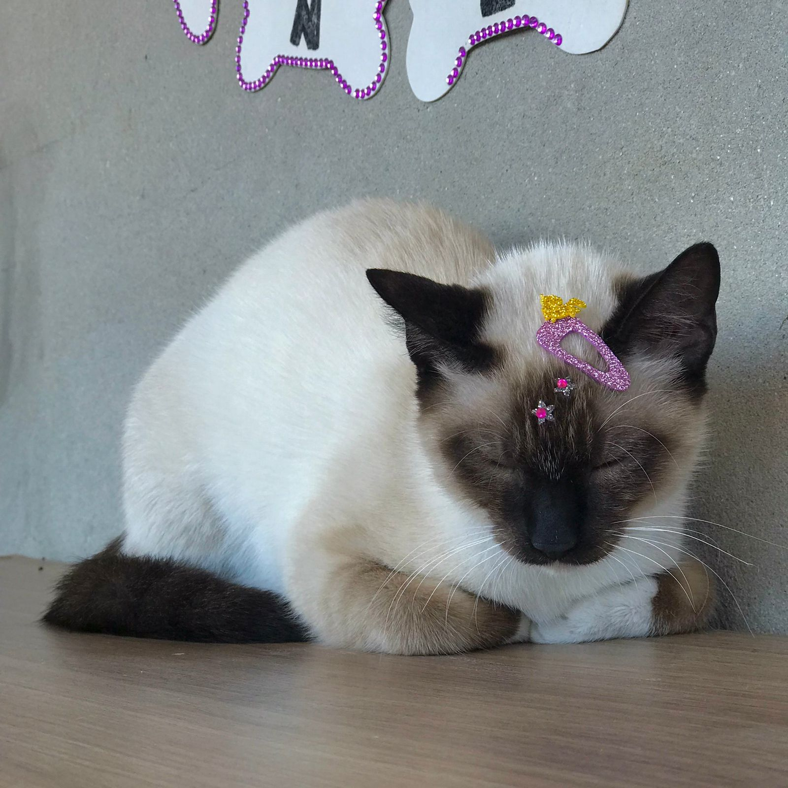
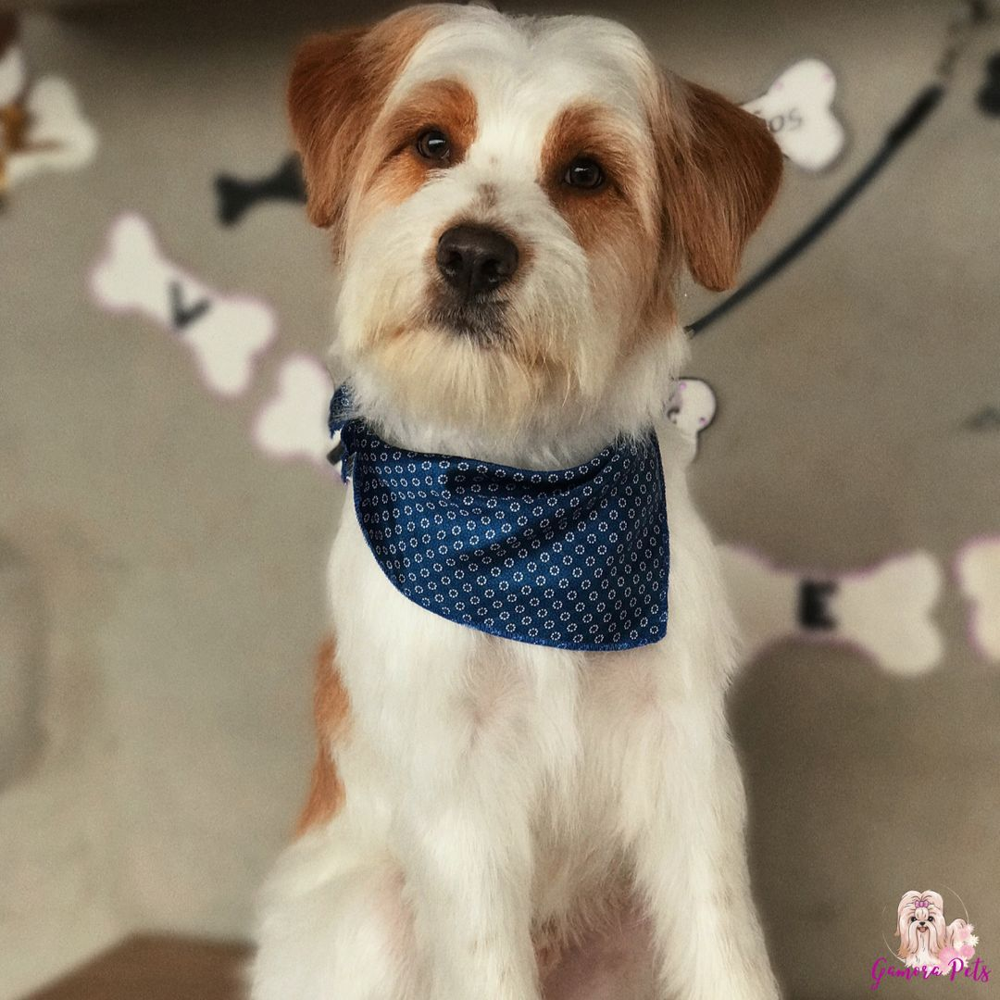

Layla 1 ano gato fêmea

Layla | 1a
Juana 6 meses gato fêmea

Juana | 6m
Dinamit 1 ano gato macho

 Dinamit | 1a
Dinamit | 1a
Litto 6 meses cachorro macho

Litto | 6m
Rob 1 ano cachorro macho

Rob | 1a
Batman 2 anos cachorro macho
Batman | 2a
Nani 5 meses cachorro macho
Nani | 5m
Klaus 1 anos cachorro macho

Klaus | 1a
Miran 5 anos cachorro fêmea